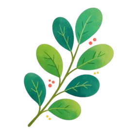
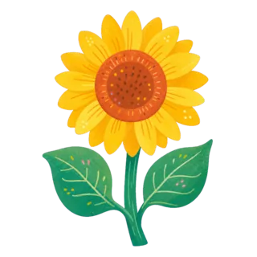
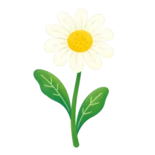
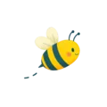

生态全景
数字公共物品花园
大圈是整个 Mycelium 生态；最大的圈是城市，城市里社区与个体两个圈相互交汇——许多公共物品，个体与社区都能共用。每一朵花、每一处设施，都是帮助人们跨越科技鸿沟、共享数字生活福祉的公共物品。
点击花园里的设施或圈层，下方展开它服务谁、能做什么、如何接入




系统构成
Infra · Protocol · Network
Mycelium 的协作能力由三层组成，如同菌丝网络的根系、信号与养分。
01
Infra
底层基础设施：账户、支付、节点与硬件（如 imx93），让任何人都能自托管接入。
02
Protocol
协议层：身份、激励与治理规则（GToken、OpenPNTs），把独立的部分连成可协作的整体。
03
Network
网络层：由社区、个体与城市组成的协作网络，无许可地生长、交换与共享。
基础设施层
为开发者而建
基建不是拿来点的产品，它是开发者构建其上的底层基质。
ACCOUNT · CORE CONTRACT
AirAccount
链上智能合约账户 —— Session Keys，446/446 测试通过。
GAS
SuperPaymaster
Gasless 交易与 Web3 代理微支付。
YetAnotherAA · REF
YAAA
YetAnotherAA —— Passkey、账户流与 AAStar 集成的一体化参考实现。
KMS · TEE
KMS
指纹登录，无需持有 ETH —— TEE 保护的私钥管理。
IDENTITY · ENS
CometENS
为每个账户提供链上可读的身份与命名。
DVT · VALIDATION
DVT
分布式验证 —— 信任从不落在单个节点上。
无许可加入
把你的节点接入菌丝网络
加入生态是无许可的。四步即可让你的节点成为花园的一部分。
使用 · 以贡献换取
不掏钱，但也不是白拿
为社区做出贡献、参与进来，你就能挣到基础服务：日常 gas 代付，以及 mint SBT 的成本。随后 mint 自己的 SBT、加入多个社区、领取并完成任务获得不同社区的积分、到社区兑换台兑换奖品。
浏览公共物品索引 →
加入 · 成为 Infra
运行节点，为别人提供服务
加入 Mycelium 的方式之一：运行 KMS 与 DVT 节点。你需要自备硬件（推荐 imx93，其他设备亦可）并质押 stake。下面四步即可完成。
自建 · 一分钱不花
或者，把代码全部复刻走
这正是开源公共物品的魅力：你可以复刻全部代码，自建一整套机制，不购买我们的任何服务。前提是你有足够的技术团队与服务器投入 —— 多数人不会为了喝口水，去建一座自来水厂。
复刻全部代码 →
🚌
公交车也要收票 —— 但只收到成本线附近
COS72 是一个代码仓库，它本身就是数字公共物品，任何人都能免费拿去自部署。但跑起来的社区是有成本的 —— 电费、服务器、AI token、gas fee，都得有人付。我们不做慈善，也不赚商业利润，只收非常低的、足以让它可持续运转下去的成本：gas 赞助 1 美分起步（基础 token transfer，覆盖 90% 场景），x402 facilitator 仅收 1.5%，KMS 与 DVT 的服务器成本摊进 aPNTs 与交易成本。
01
准备硬件
推荐 imx93，其他设备亦可
02
下载镜像
获取官方系统镜像
03
校验 hash
核对镜像完整性
04
质押并接入
完成质押，按指引接入网络
（前往 AAStar 社区节点门户：下载镜像与自助部署）
为谁而建 · WHO IT'S FOR
01
开发者 · Developers
在基建层之上构建 —— SDK、paymaster、账户、DVT。
02
社区运营者 · Operators
用 Cos72 运行一个社区或组织 —— 任务、共识、兑换。
03
社区成员 · Members
加入、贡献、获得回报 —— 数字主权是默认项。
04
生态 / 投资人 · Backers
在最底层资助开源的数字公共物品。
快速索引
公共物品快速索引
帮助生态用户快速找到适合自己的数字公共物品。完整索引含组织能力要求与 GitHub 仓库。